Lecture 4: Data Management
Lecture by Sergey Karayev.
Notes by James Le and Vishnu Rachakonda.
Published August 29, 2022.
Download slides.
1 - Introduction
One thing people don't quite get as they enter the field of ML is how much of it deals with data - putting together datasets, exploring the data, wrangling the data, etc. The key points of this lecture are:
-
Spend 10x as much time exploring the data as you would like to.
-
Fixing, adding, and augmenting the data is usually the best way to improve performance.
-
Keep it all simple!
2 - Data Sources
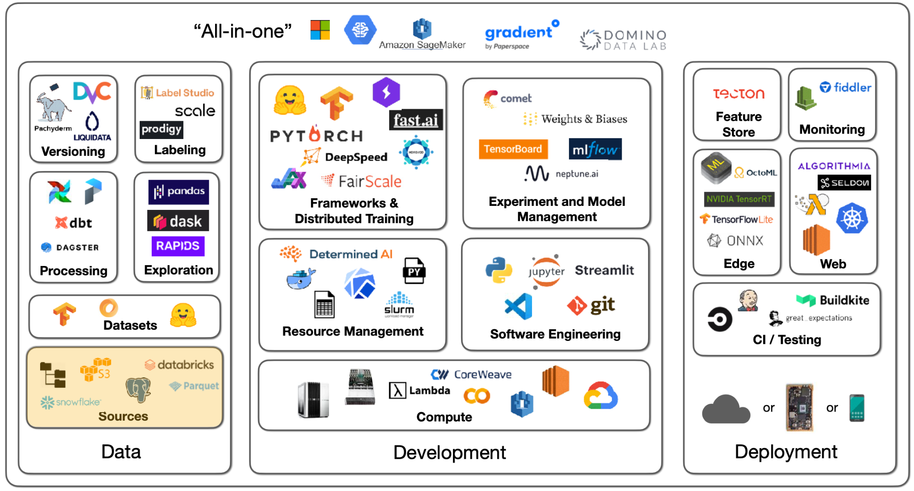
There are many possibilities for the sources of data. You might have images, text files, logs, or database records. In deep learning, you need to get that data into a local filesystem disk next to a GPU. How you send data from the sources to training is different for each project.
-
With images, you can simply download them from S3.
-
With text files, you need to process them in some distributed way, analyze the data, select a subset, and put that on a local machine.
-
With logs and database records, you can use a data lake to aggregate and process the data.
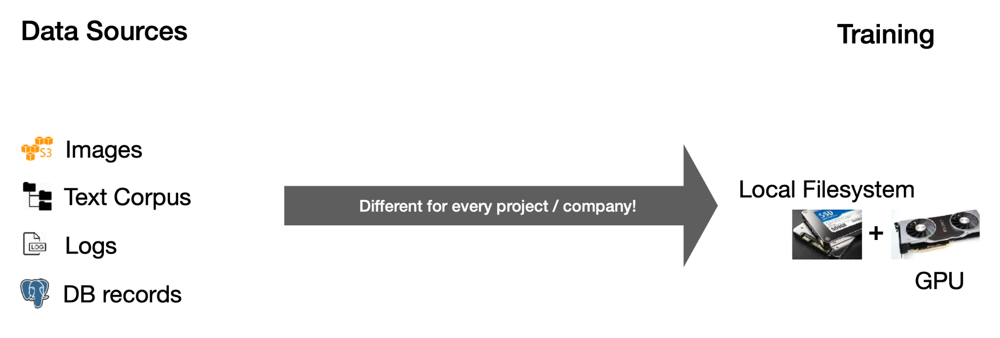
The basics will be the same - a filesystem, object storage, and databases.
Filesystem
The filesystem is a fundamental abstraction. Its fundamental unit is a file - which can be text or binary, is not versioned, and is easily overwritten. The filesystem is usually on a disk connected to your machine - physically connected on-prem, attached in the cloud, or even distributed.
The first thing to know about discs is that their speed and bandwidth range - from hard discs to solid-state discs. There are two orders of magnitude differences between the slowest (SATA SSD) and the fastest (NVMe SSD) discs. Below are some latency numbers you should know, with the human-scale numbers in parentheses:
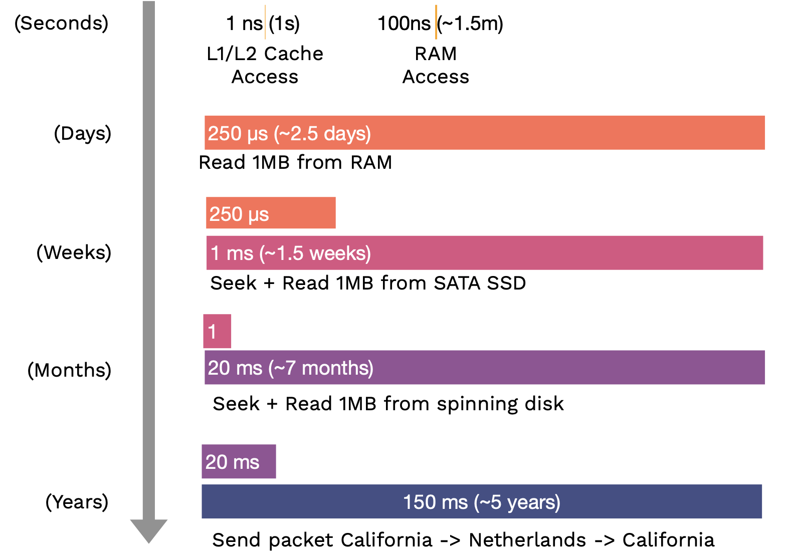
What formats should the data be stored on the local disc?
-
If you work with binary data like images and audio, just use the standard formats like JPEG or MP3 that it comes in.
-
If you work with metadata (like labels), tabular data, or text data, then compressed JSON or text files are just fine. Alternatively, Parquet is a table format that is fast, compact, and widely used.
Object Storage
The object storage is an API over the filesystem. Its fundamental unit is an object, usually in a binary format (an image, a sound file, a text file, etc.). We can build versioning or redundancy into the object storage service. It is not as fast as the local filesystem, but it can be fast enough within the cloud.
Databases
Databases are persistent, fast, and scalable storage and retrieval of structured data systems. A helpful mental model for this is: all the data that the databases hold is actually in the computer\'s RAM, but the database software ensures that if the computer gets turned off, everything is safely persisted to disk. If too much data is in the RAM, it scales out to disk in a performant way.
You should not store binary data in the database but the object-store URLs instead. Postgres is the right choice most of the time. It is an open-source database that supports unstructured JSON and queries over that JSON. SQLite is also perfectly good for small projects.
Most coding projects that deal with collections of objects that reference each other will eventually implement a crappy database. Using a database from the beginning with likely save you time. In fact, most MLOps tools are databases at their core (e.g., W&B is a database of experiments, HuggingFace Hub is a database of models, and Label Studio is a database of labels).
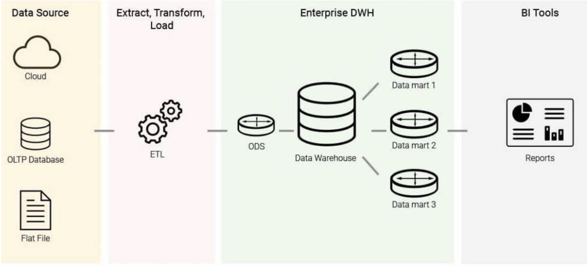
Data warehouses are stores for online analytical processing (OLAP), as opposed to databases being the data stores for online transaction processing (OLTP). You get data into the data warehouse through a process called ETL (Extract-Transform-Load): Given a number of data sources, you extract the data, transform it into a uniform schema, and load it into the data warehouse. From the warehouse, you can run business intelligence queries. The difference between OLAP and OLTP is that: OLAPs are column-oriented, while OLTPs are row-oriented.
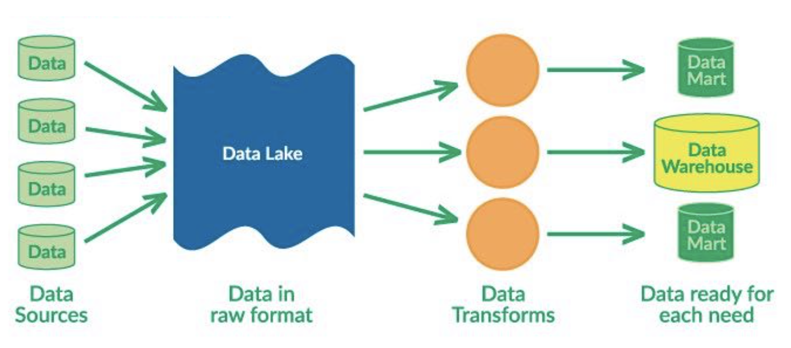
Data lakes are unstructured aggregations of data from multiple sources. The main difference between them and data warehouses is that data lakes use ELT (Extract-Load-Transform) process: dumping all the data in and transforming them for specific needs later.
The big trend is unifying both data lake and data warehouse, so that structured data and unstructured data can live together. The two big platforms for this are Snowflake and Databricks. If you are really into this stuff, "Designing Data-Intensive Applications" is a great book that walks through it from first principles.
3 - Data Exploration
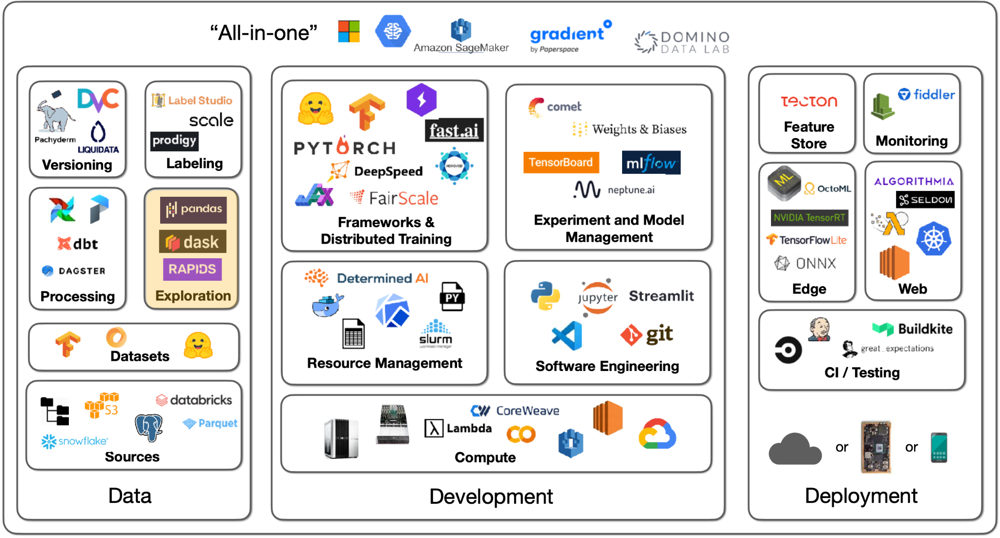
To explore the data, you must speak its language, mostly SQL and, increasingly, DataFrame. SQL is the standard interface for structured data, which has existed for decades. Pandas is the main DataFrame in the Python ecosystem that lets you do SQL-like things. Our advice is to become fluent in both to interact with both transactional databases and analytical warehouses and lakes.
Pandas is the workhorse of Python data science. You can try DASK DataFrame to parallelize Pandas operations over cores and RAPIDS to do Pandas operations on GPUs.
4 - Data Processing
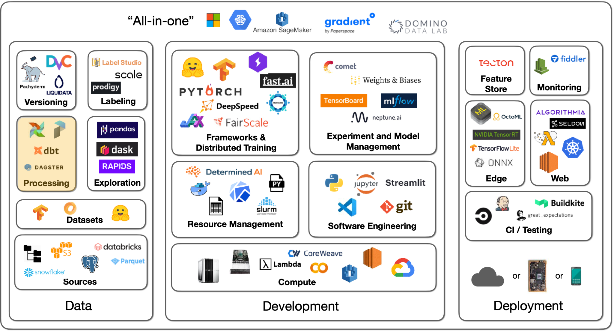
Talking about data processing, it's useful to have a motivational example. Let's say we have to train a photo popularity predictor every night. For each photo, the training data must include:
-
Metadata (such as posting time, title, and location) that sits in the database.
-
Some features of the user (such as how many times they logged in today) that are needed to be computed from logs.
-
Outputs of photo classifiers (such as content and style) that are needed to run the classifiers.
Our ultimate task is to train the photo predictor model, but we need to output data from the database, compute the logs, and run classifiers to output their predictions. As a result, we have task dependencies. Some tasks can't start until others are finished, so finishing a task should kick off its dependencies.
Ideally, dependencies are not always files but also programs and databases. We should be able to spread this work over many machines and execute many dependency graphs all at once.
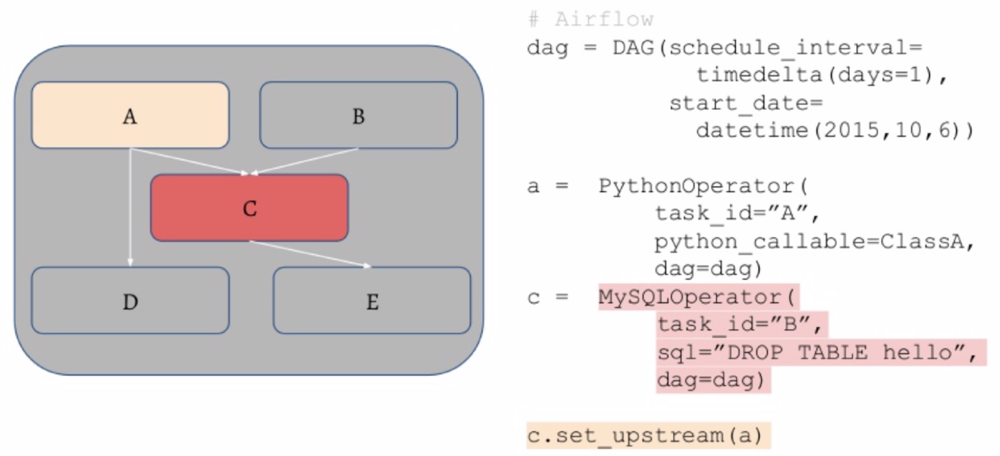
-
Airflow is a standard scheduler for Python, where it's possible to specify the DAG (directed acyclic graph) of tasks using Python code. The operator in that graph can be SQL operations or Python functions.
-
To distribute these jobs, the workflow manager has a queue for the tasks and manages the workers that pull from them. It will restart jobs if they fail and ping you when the jobs are finished.
-
Prefect and Dagster are contenders to improve and replace Airflow in the long run.
The primary advice here is not to over-engineer things. You can get machines with many CPU cores and a lot of RAM nowadays. For example, UNIX has powerful parallelism, streaming, and highly optimized tools.
5 - Feature Store
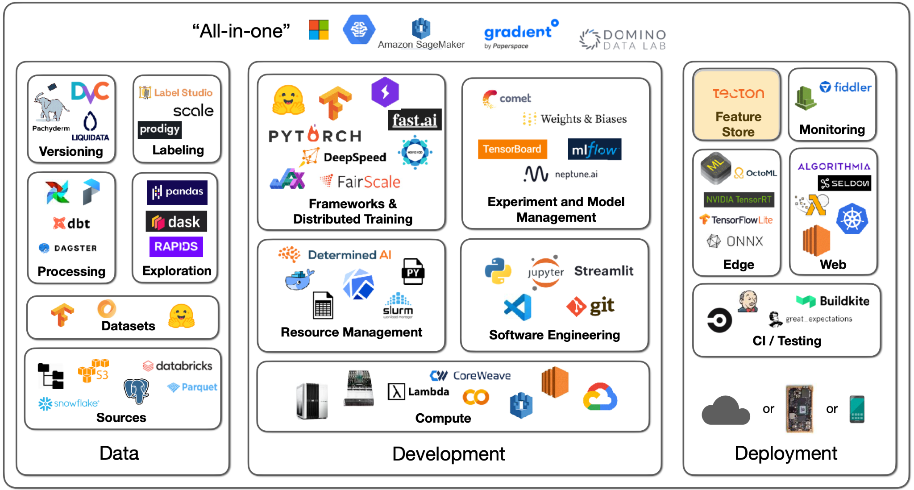
Let's say your data processing generates artifacts you need for training. How do you make sure that, in production, the trained model sees the same processing taking place (which happened during training)? How do you avoid recomputation during retraining?
Feature stores are a solution to this (that you may not need!).
-
The first mention of feature stores came from this Uber blog post describing their ML platform, Michelangelo. They had an offline training process and an online prediction process, so they built an internal feature store for both processes to be in sync.
-
Tecton is the leading SaaS solution to feature store.
-
Feast is a common open-source option.
-
Featureform is a relatively new option.
6 - Datasets
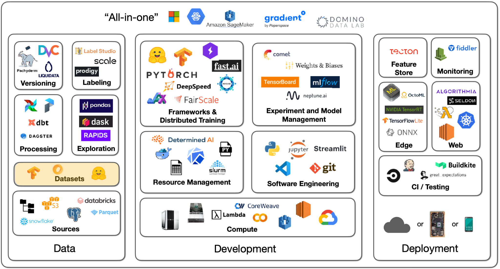
What about datasets specifically made for machine learning?
HuggingFace Datasets is a great source of machine learning-ready data. There are 8000+ datasets covering a wide variety of tasks, like computer vision, NLP, etc. The Github-Code dataset on HuggingFace is a good example of how these datasets are well-suited for ML applications. Github-Code can be streamed, is in the modern Apache Parquet format, and doesn't require you to download 1TB+ of data in order to properly work with it. Another sample dataset is RedCaps, which consists of 12M image-text pairs from Reddit.
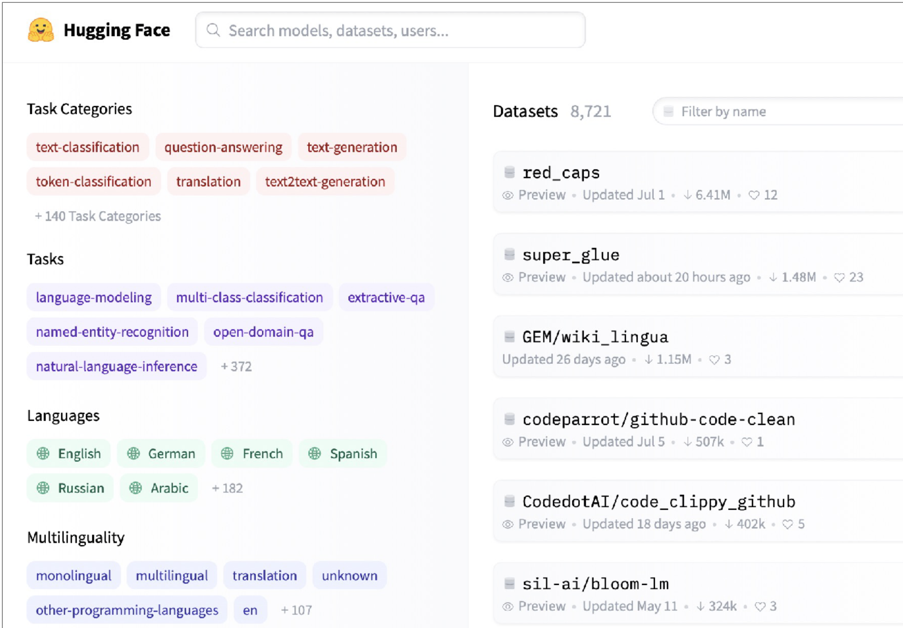
Another interesting dataset solution for machine learning is Activeloop. This tool is particularly well equipped to work with data and explore samples without needing to download it.
7 - Data Labeling
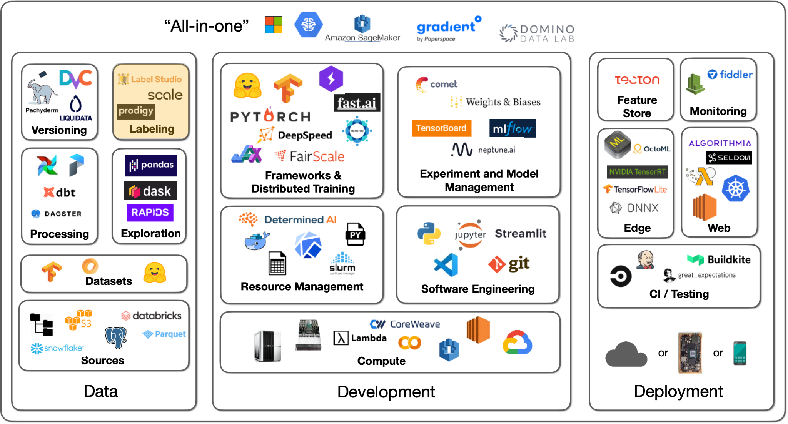
No Labeling Required
The first thing to talk about when it comes to labeling data is...maybe we don\'t have to label data? There are a couple of options here we will cover.
Self-supervised learning is a very important idea that allows you to avoid painstakingly labeling all of your data. You can use parts of your data to label other parts of your data. This is very common in NLP right now. This is further covered in the foundation model lecture. The long and short of it is that models can have elements of their data masked (e.g., the end of a sentence can be omitted), and models can use earlier parts of the data to predict the masked parts (e.g., I can learn from the beginning of the sentence and predict the end). This can even be used across modalities (e.g., computer vision and text), as OpenAI CLIP demonstrates.
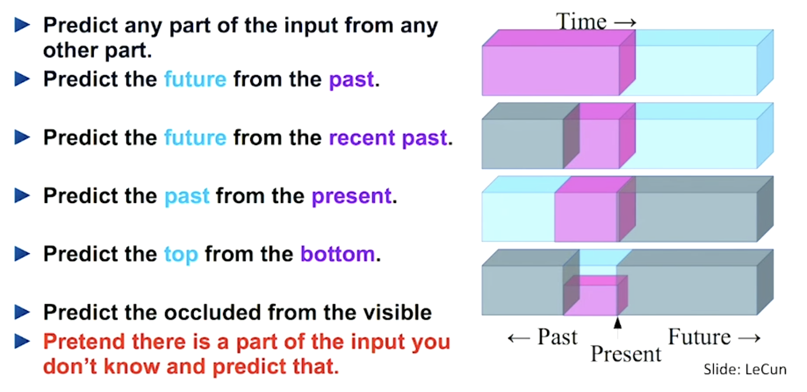
Image data augmentation is an almost compulsory technique to adopt, especially for vision tasks. Frameworks like torchvision help with this. In data augmentation, samples are modified (e.g., brightened) without actually changing their core "meaning." Interestingly, augmentation can actually replace labels. SimCLR is a model that demonstrates this - where its learning objective is to maximize agreement between augmented views of the same image and minimize agreement between different images.
For other forms of data, there are a couple of augmentation tricks that can be applied. You can delete some cells in tabular data to simulate missing data. In text, there aren't established techniques, but ideas include changing the order of words or deleting words. In speech, you could change the speed, insert pauses, etc.
Synthetic data is an underrated idea. You can synthesize data based on your knowledge of the label. For example, you can create receipts if your need is to learn how to recognize receipts from images. This can get very sophisticated and deep, so tread carefully.
You can also get creative and ask your users to label data for you. Google Photos, as any user of the app knows, regularly gets users to label images about where people in photos are the same or different.
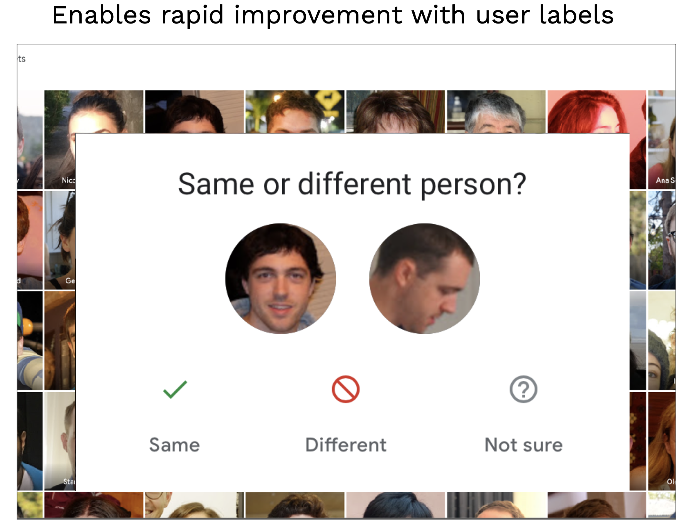
This is an example of the data flywheel. Improving the data allows the user to improve the model, which in turn makes their product experience better.
Labeling Solutions
These are all great options for avoiding labeling data. However, you'll usually have to label some data to get started.
Labeling has standard annotation features, like bounding boxes, that help capture information properly. Training annotators properly is more important than the particular kind of annotation. Standardizing how annotators approach a complex, opinable task is crucial. Labeling guidelines can help capture the exact right label from an annotator. Quality assurance is key to ensuring annotation and labeling are happening properly.
There are a few options for sourcing labor for annotations:
-
Full-service data labeling vendors offer end-to-end labeling solutions.
-
You can hire and train annotators yourself.
-
You can crowdsource annotation on a platform like Mechanical Turk.
Full-service companies offer a great solution that abstracts the need to build software, manage labor, and perform quality checks. It makes sense to use one. Before settling on one, make sure to dedicate time to vet several. Additionally, label some gold standard data yourself to understand the data yourself and to evaluate contenders. Take calls with several contenders, ask for work samples on your data, and compare them to your own labeling performance.
-
Scale AI is the dominant data labeling solution. It offers an API that allows you to spin up tasks.
-
Additional contenders include Labelbox and Supervisely.
-
LabelStudio is an open-source solution for performing annotation yourself, with a companion enterprise version. It has a great set of features that allow you to design your interface and even plug-in models for active learning!
-
Diffgram is a competitor to Label Studio.
-
Recent offerings, like Aquarium and Scale Nucleus, have started to help concentrate labeling efforts on parts of the dataset that are most troublesome for models.
-
Snorkel is a dataset management and labeling platform that uses weak supervision, which is a similar concept. You can leverage composable rules (e.g., all sentences that have the term "amazing" are positive sentiments) that allow you to quickly label data faster than if you were to treat every data point the same.
In conclusion, try to avoid labeling using techniques like self-supervised learning. If you can't, use labeling software and eventually outsource the work to the right vendor. If you can't afford vendors, consider hiring part-time work rather than crowdsourcing the work to ensure quality.
8 - Data Versioning
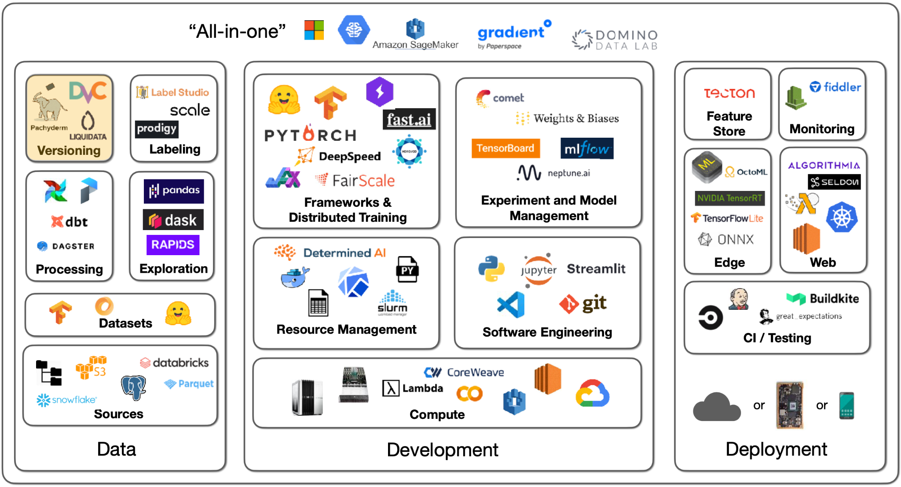
Data versioning comes with a spectrum of approaches:
-
Level 0 is bad. In this case, data just lives on some file system. In these cases, the issue arises because the models are unversioned since their data is unversioned. Models are part code, part data. This will lead to the consequence of being unable to get back to a previous level of performance if need be.
-
You can prevent this event with Level 1, where you snapshot your data each time you train. This somewhat works but is far from ideal.
-
In Level 2, data is versioned like code, as a commingled asset with versioned code. You can use a system like git-lfs that allows you to store large data assets alongside code. This works really well!
-
Level 3 involves specialized solutions for working with large data files, but this may not be needed unless you have a very specific need (i.e., uniquely large or compliance-heavy files).
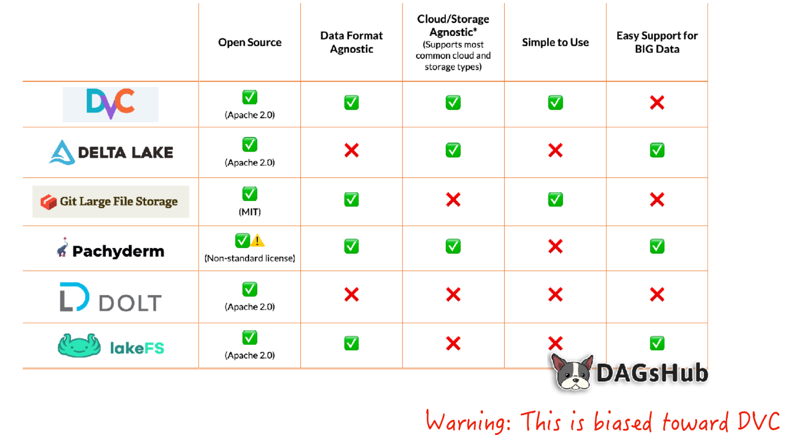
DVC is a great tool for this. DVC helps upload your data asset to a remote storage location every time you commit changes to the data file or trigger a commit; it functions like a fancier git-lfs. It adds features like lineage for data and model artifacts, allowing you to recreate pipelines.
Several techniques are associated with privacy-controlled data, like federated learning, differential privacy, and learning on encrypted data. These techniques are still in research, so they aren't quite ready for an FSDL recommendation.
We are excited to share this course with you for free.
We have more upcoming great content. Subscribe to stay up to date as we release it.
We take your privacy and attention very seriously and will never spam you. I am already a subscriber